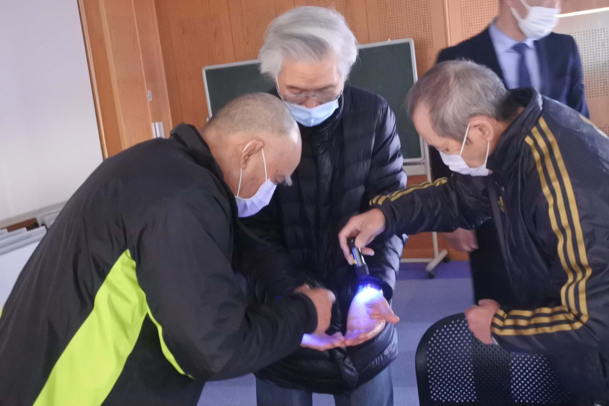
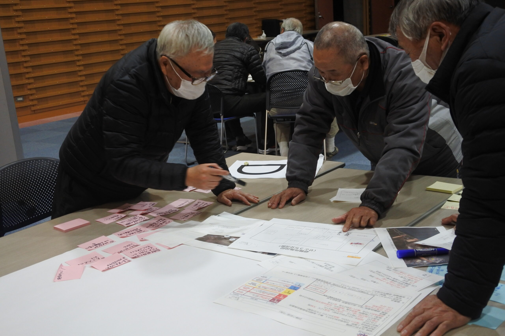

定 義
ＣＣＰ（コミュニティ継続計画）とは
ＣＣＰ（コミュニティ継続計画）とは、地域における災害対応計画です。
地域内のさまざまなコミュニティ組織が互いに協力し、地域の防災力・災害対応力を高めていくための計画書を指します。
企業向けのＢＣＰ（事業継続計画）が事業の継続を目的とするのに対し、ＣＣＰは地域コミュニティそのものの継続と機能維持を目的としています。
対象となる組織
ＣＣＰに関わる地域のコミュニティ
住民自主防災組織
地域住民が自主的に組織
消防団
※住民自主防災組織とは別組織
老人会
高齢者コミュニティ
福祉会
地域福祉活動組織
子ども会
子ども・保護者コミュニティ
防災士会
防災士が集まる専門組織
住民自主防災組織と消防団は名称が似ていますが、別々の独立した組織です。 それぞれが独自の役割を持ちながら連携することで、地域全体の防災力が高まります。

地域のコミュニティが連携して取り組む防災活動
目 的
各コミュニティが連携して地域を守る
各コミュニティが
計画を策定
計画を策定
→
組織間の
役割を明確化
役割を明確化
→
合同訓練・
連携体制の構築
連携体制の構築
→
地域防災力・
災害対応力の向上
災害対応力の向上
JDRS の実績
ＪＤＲＳのＣＣＰ支援実績
📍 各自治体からのご依頼による訓練実績
JDRS（一般社団法人 日本災害救助支援機構）は、元自衛官（危機管理専門）で組織する団体として、
これまで複数の自治体からＣＣＰに関する訓練のご依頼を受け、実績を重ねてまいりました。
地域の特性や各コミュニティの実情に合わせた訓練設計を行い、
住民自主防災組織・消防団・各福祉団体など複数の組織が連携して取り組む
実践的な地域防災訓練を提供しています。
ＣＣＰ策定のご支援から訓練の実施まで、地域の防災力強化を
トータルにサポートいたします。

JDRS による地域防災訓練の様子